<ion-app>
  <ion-router-outlet  id="main-content"></ion-router-outlet>

  <ion-menu side="start" menuId="main-menu" contentId contentId="main-content">
   

    <ion-content class="menu-content">
      <ion-list>
        <ion-menu-toggle auto-hide="false">
          <ion-item [routerLink]="'/home'">
            <ion-icon name="home" slot="start"></ion-icon>
            <ion-label>Home</ion-label>
          </ion-item>
        </ion-menu-toggle>

        <ion-menu-toggle auto-hide="false">
          <ion-item [routerLink]="'/loja'">
            <ion-avatar slot="start">
              
            </ion-avatar>
            <ion-label>Loja</ion-label>
          </ion-item>
        </ion-menu-toggle>
        
      
        <ion-menu-toggle auto-hide="false">
          <ion-item [routerLink]="'/planos'">
            <ion-icon name="medal" slot="start"></ion-icon>
            <ion-label>Planos</ion-label>
          </ion-item>
        </ion-menu-toggle>

        <ion-menu-toggle auto-hide="false">
          <ion-item [routerLink]="'/feedback'">
            <ion-icon name="thumbs-up" slot="start"></ion-icon>
            <ion-label>Feedback</ion-label>
          </ion-item>
        </ion-menu-toggle>
    
        <!-- Adicione outros itens do menu com seus respectivos links aqui -->
      
        <!-- Ícones de redes sociais -->
        <div class="social" style="margin-right: 30px; margin-top: 140%; display: flex; flex-direction: row;">

          <ion-item href="https://www.facebook.com/ChangesApp/" class="social-icon" style="height: 100px; margin-left: 20px;width: 50px; flex: 1;">
            <ion-icon name="logo-facebook"></ion-icon>
          </ion-item>
           
          <ion-item href="https://twitter.com/Changes__App" class="social-icon" style="height: 100px; width: 50px; flex: 1;">
            <ion-icon name="logo-twitter"></ion-icon>
          </ion-item>    
        
          <ion-item href="https://www.instagram.com/changes_app/" class="social-icon" style="height: 100px; width: 50px; flex: 1;">
            <ion-icon name="logo-instagram"></ion-icon>
          </ion-item>
        </div>
        
        
      </ion-list>
    </ion-content>
    
  </ion-menu>

  <ion-tabs *ngIf="showTabs" >

    <ion-tab-bar  slot="bottom">
      <ion-tab-button  tab="inbox">
        <ion-icon name="chatbubble"></ion-icon>
      </ion-tab-button>
  
      <ion-tab-button tab="friends">
        <ion-icon name="people-circle"></ion-icon>
      </ion-tab-button>
  
      <ion-tab-button tab="home" class="button-center">
        <ion-icon name="home"></ion-icon>
      </ion-tab-button>
  
      <ion-tab-button tab="pesquisar">
        <ion-icon  name="search"></ion-icon>
      </ion-tab-button>
  
      <ion-tab-button tab="profile">
        <ion-icon name="person"></ion-icon>
      </ion-tab-button>
    </ion-tab-bar>
  
  </ion-tabs>
  

 
  
  


</ion-app>

